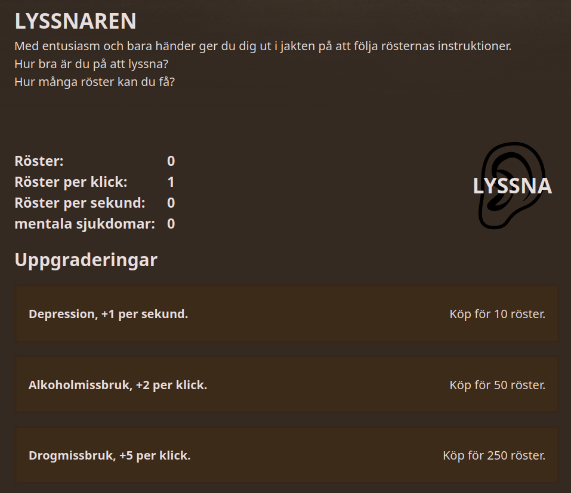
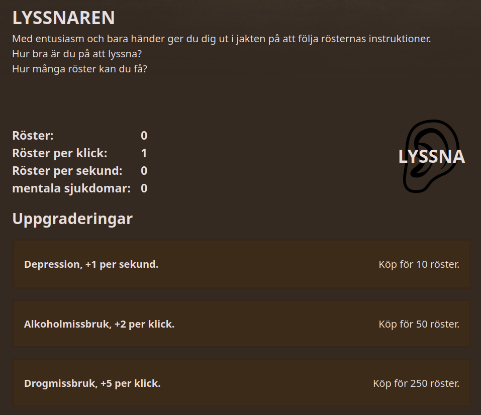

Voices Clicker
Detta är ett clickerspel med uppgraderingar och prestationer. Det handlar om att få så många röster som möjligt. För att testa spelat klicka här. Kolla också gärna på github sidan.
Bild på spelet:
Detta är ett clickerspel med uppgraderingar och prestationer. Det handlar om att få så många röster som möjligt. För att testa spelat klicka här. Kolla också gärna på github sidan.
Bild på spelet:
